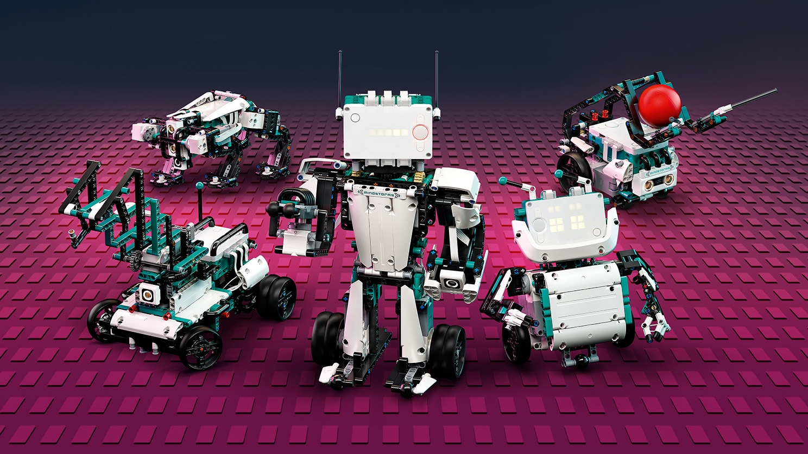

1º Bimestre
Vimos sobre o aplicativo Scratch, e uma leve apresentação sobre os conceitos da programação em Java, onde vimos o NetBeans, mas não chegamos a utilizar
2º Bimestre
Fomos apresentados ao NetBeans e começamos a realmente usar e aprender o básico da programação e como fazer especificas ações em Java
3º Bimestre
Estávamos vendo sobre banco de dados de loja, a fazer cadastros de clientes e criar planilhas completas no Access.
Torneio de Robótica FLL
É um torneio que desafia estudantes de 9 a 16 anos a buscarem soluções para problemas do cotidiano na atualidade. Os temas mudam a cada temporada.
Para participar, os times precisam ter de dois a dez integrantes, que podem estar associados a uma escola, seja o que for. Os jovens precisam trabalhar em grupo visando respeito, ganho mutuo e competição amigável.
Realidade Virtual
Tecnologia de interface que cria um ambiente 3D próximo a realidade da pessoa com efeitos visuais, sonoros e até táteis.
As interações normalmente acontecem por meio de acessórios como: Óculos VR, Luvas, mouses entre outros dispositivos.
Realidade Aumentada
Integração de elementos virtuais em cenas no mundo geral, normalmente por câmeras e sensores de movimento. O recurso vem sendo usado muito em redes sociais, como filtros do Instagram e Snapchat, e no jogo Pokémon Go.
Também é usada para fins educacionais e profissionais, como fazendo design de produtos, marketing e engenharia, observando objetos tridimensionais no mundo real, a partir de telas como um celular e próprios óculos translúcidos de Realidade Aumentada.
Lego Mindstorms
É uma linha própria para a Educação Tecnológica, para ajudar na praticidade de conteúdos da área da tecnologia. Os estudantes, usando o kit, realizam atividades que possibilita os estudantes o desenvolvimento da capacidade psicomotora e raciocínio lógico.
Open Roberta

Projeto para ajudar estudantes e professores a programas pequenos robôs, feitos a partir dos kits do Lego Mindstorms. A empresa visa criar um software de código aberto e disponível na nuvem para os alunos poderem estudarem sem se preocupar.